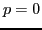

Although it is common to use a symmetric preconditioner for the conjugate gradient method, in this presentation, we demonstrate that a non-symmetric preconditioning strategy can be significantly more efficient. The focus, motivation and conclusions of this research can be summarized as follows.
This work is focused on an effective preconditioning strategy to increase the efficiency of the Conjugate Gradient (CG) method for Symmetric and Positive-Definite (SPD) linear systems resulting from Symmetric Interior Penalty (discontinuous) Galerkin (SIPG) discretizations for diffusion problems with extreme contrasts in the coefficients, such as those encountered in oil reservoir simulations.
A Discontinuous Galerkin (DG) method can be thought of as a higher-order
generalization of the finite volume method that uses (discontinuous)
piecewise polynomials of degree  rather than piecewise constants. As
such, it combines the best of both classical finite element methods and
finite volume methods, and it is particularly suitable for handling
non-matching grids and designing hp-refinement strategies. However, a
relevant drawback is that its resulting linear system is often
ill-conditioned and relatively large due to the large number of unknowns
per mesh element. In search of suitable iterative solution techniques,
much attention has been paid to subspace correction methods, such as
Schwarz domain decomposition; geometric (h-)multigrid; spectral
(p-)multigrid; and algebraic multigrid.
rather than piecewise constants. As
such, it combines the best of both classical finite element methods and
finite volume methods, and it is particularly suitable for handling
non-matching grids and designing hp-refinement strategies. However, a
relevant drawback is that its resulting linear system is often
ill-conditioned and relatively large due to the large number of unknowns
per mesh element. In search of suitable iterative solution techniques,
much attention has been paid to subspace correction methods, such as
Schwarz domain decomposition; geometric (h-)multigrid; spectral
(p-)multigrid; and algebraic multigrid.
In particular, Dobrev et al. [Numer. Linear Algebra Appl., 13 (2006), pp. 753-770] have proposed a spectral two-level preconditioner that makes use of coarse corrections based on the solution approximation with polynomial degree

. They have shown theoretically that this preconditioner yields scalable convergence of the CG method (independent of the mesh element diameter) for a large class of problems. Another nice property is that the use of only two levels offers an appealing simplicity. More importantly, the coefficient matrix that is used for the coarse correction is quite similar to a matrix resulting from a central difference discretization, for which very efficient solution techniques are readily available.
However, two main issues remain when using this preconditioner for a SIPG matrix  :
first, two smoothing steps must be applied during each iteration,
and the smoother needs to satisfy an inconvenient criterion to ensure
that the preconditioning operator is SPD. The second issue is that the
SIPG method involves a stabilizing penalty parameter, whose influence on
both
:
first, two smoothing steps must be applied during each iteration,
and the smoother needs to satisfy an inconvenient criterion to ensure
that the preconditioning operator is SPD. The second issue is that the
SIPG method involves a stabilizing penalty parameter, whose influence on
both  and the preconditioner is not well understood for problems with
strongly varying coefficients. On the one hand, this parameter needs to
be chosen suffciently large to ensure that the SIPG method is stable and
convergent, and that
and the preconditioner is not well understood for problems with
strongly varying coefficients. On the one hand, this parameter needs to
be chosen suffciently large to ensure that the SIPG method is stable and
convergent, and that  is SPD. At the same time, it needs to be chosen
as small as possible to avoid an unnecessarily large condition number.
Known computable theoretical lower bounds [J. Comput. Appl.
Math., 206 (2007), pp. 843-872] are based on the ratio between the
global maximum and minimum of the diffusion coefficient, and are
therefore impractical for our application.
is SPD. At the same time, it needs to be chosen
as small as possible to avoid an unnecessarily large condition number.
Known computable theoretical lower bounds [J. Comput. Appl.
Math., 206 (2007), pp. 843-872] are based on the ratio between the
global maximum and minimum of the diffusion coefficient, and are
therefore impractical for our application.
To eliminate one of the two smoothing steps and the inconvenient restriction on the smoother at the same time, we have cast the spectral two-level preconditioner into the deflation framework by using the analysis by Tang et al. [J. Sci. Comput., 39 (2009), pp. 340-370]. Additionally, we have studied the potential of a penalty parameter that is based on local values of the diffusion coefficient, instead of the usual strategy to use one global constant for the entire domain.
During the presentation, we discuss how and why the proposed spectral two-level deflation method can be incorporated in a CG algorithm in the form of an asymmetric preconditioning operator. Furthermore, we demonstrate numerically how the resulting iterative scheme performs for diffusion problems with strongly varying coefficients, for both a constant and a diffusion-dependent penalty parameter.
Our main findings can be summarized as follows: by reformulating the
spectral two-level preconditioner as a deflation method and using a
diffusion-dependent penalty parameter, the CG method can become over
 times faster, while retaining scalable convergence (independent of
the mesh element diameter). Additionally, the SIPG convergence is
significantly better.
Altogether, the SIPG penalty parameter can best be chosen
diffusion-dependent, and the efficiency of a symmetric two-level
preconditioner can be significantly improved by switching to an
asymmetric deflation variant.
times faster, while retaining scalable convergence (independent of
the mesh element diameter). Additionally, the SIPG convergence is
significantly better.
Altogether, the SIPG penalty parameter can best be chosen
diffusion-dependent, and the efficiency of a symmetric two-level
preconditioner can be significantly improved by switching to an
asymmetric deflation variant.